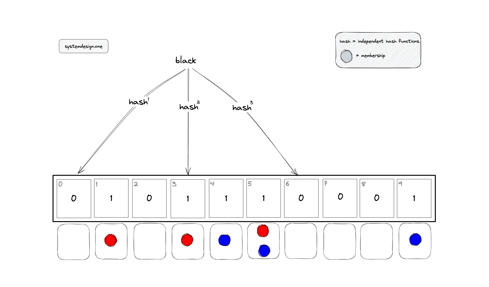

Blockchain
Explain Simplified Payment Verification Nodes.
SPV Nodes, or Simplified Payment Verification Nodes, are a type of node in blockchain networks, often referred to as light nodes.
Simplified Payment Verification (SPV) Nodes are light nodes in blockchain networks that verify transactions without storing the entire blockchain, relying on full nodes for data.
SPV Nodes use block headers and Merkle proofs for efficient, resource-light verification, suitable for devices like smartphones.
What is the Privacy solution for SPV nodes?
- Reduced Data Exposure
- SPV nodes use Merkle proofs to verify transactions.
- They request only the block headers and the necessary Merkle branches, reducing the amount of data they need to download and store.
- Random Connections
- To prevent attacks like Denial of Service (DoS) or double-spending, SPV nodes make random connections to different full nodes. This increases the likelihood of communicating with at least one honest node.
- Also connecting to random set of nodes reduces the risk of being tracked by a single entity.
- Tor Network
- Using the Tor network can help anonymize the connections between SPV nodes and full nodes, enhancing privacy.
- .Bloom filters
- Bloom filters allow SPV nodes to request a set of transactions without revealing the exact transactions they are interested in, providing a layer of privacy.
- Essentially the Bloom filter contains the position for every transaction in the mempool. By marking the desired position as 1 and sending the request to full node, the full node is able to determine which transactions have been requested.
- 
Explain how Merkle Tree is created, how Merkle Root is used. What is Merkle Proof?
flowchart TD
th["Top Hash
*hash(Hash 0 + Hash 1)*"] --> h0["Hash 0
*hash(Hash 0-0 + Hash 0-1)*"]
th --> h1["Hash 1
*hash(Hash 1-0 + Hash 1-1)*"]
subgraph Block
t1
t2
t3
t4
end
h0 --> h00["Hash 0-0
*hash(Transaction 1)*"] --> t1[Transaction 1]
h0 --> h01["Hash 0-1
*hash(Transaction 2)*"] --> t2[Transaction 2]
h1 --> h10["Hash 1-0
*hash(Transaction 3)*"] --> t3[Transaction 3]
h1 --> h11["Hash 1-1
*hash(Transaction 4)*"] --> t4[Transaction 4]
Creation of a Merkle Tree
A Merkle Tree is a hierarchical data structure used to verify the integrity of data efficiently. Here's how it is constructed:
- Step 1: Leaf Nodes
Each data block (e.g., transactions in a blockchain) is hashed individually using a cryptographic hash function (e.g., SHA-256). - Step 2: Pairing and Hashing
- Even Number of Leaves: Pair adjacent hashes and hash them together.
- Odd Number of Leaves: Duplicate the last hash to form a pair.
- Even Number of Leaves: Pair adjacent hashes and hash them together.
- Step 3: Building the Tree
Repeat the pairing process recursively until a single root hash remains:- Combine parent nodes to form higher-level nodes.
- Final root hash is the Merkle Root.
Merkle Root: Usage and Importance
- Data Integrity
- Any alteration to a transaction (e.g., changing L1) changes its hash, propagating up the tree and altering the Merkle Root.
- The Merkle Root is embedded in the block header (e.g., in Bitcoin), making tampering evident.
- Efficient Verification
- Nodes can verify the inclusion of a transaction without downloading the entire dataset.
- Used in Simplified Payment Verification (SPV) for lightweight clients (e.g., mobile wallets).
Merkle Proof: Efficient Transaction Verification
A Merkle Proof is a cryptographic proof that a specific transaction is included in a block.
Steps to Verify a Merkle Proof (using L3 as an example):
- Start with the transaction hash:
Hash(L3). - Combine it with its sibling hash (
Hash(L4)) to compute:
Hash(Hash(L3) + Hash(L4))→ Parent Node 2. - Combine Parent Node 2 with its sibling (Parent Node 1) to compute:
Hash(Parent Node 1 + Parent Node 2)→ Merkle Root. - Compare the computed Merkle Root with the one in the block header. A match confirms the transaction's validity.
Explain the difference between Mining Pool, Transaction Pool and Pool Server.
- Mining Pool

- Definition: A collaborative group of miners who combine computational resources to increase their chances of mining a block.
- Purpose: Enhances profitability by pooling hash power, making block rewards more consistent for participants.
- Operation:
- Miners contribute computational power to solve cryptographic puzzles.
- Rewards (block subsidies + transaction fees) are distributed based on contributed work (e.g., shares).
- Examples: Slush Pool, F2Pool.
- Transaction Pool (Mempool)

- Definition: A decentralized, node-specific storage of unconfirmed transactions waiting to be included in a block.
- Purpose: Acts as a temporary buffer where transactions are validated and prioritized (e.g., by fee rate).
- Operation:
- Each node maintains its own transaction pool.
- Miners select transactions from their pool to include in blocks, often prioritizing higher fees.
- Key Feature: Dynamic and varies across nodes due to network latency and transaction selection strategies.
- Pool Server

- Definition: The central server managing a mining pool, coordinating tasks and rewards for participating miners.
- Purpose: Ensures efficient collaboration within the mining pool by assigning work and tracking contributions.
- Operation:
- Distributes block templates (transactions to mine) to miners.
- Aggregates computational results ("shares") and validates successful blocks.
- Distributes rewards proportionally to miners’ contributions.
- Key Feature: Centralized within the mining pool infrastructure but optional for miners (they can choose solo mining).
Explain different types of Blockchain.

- Public Blockchain (permissionless)
- Open Access: Anyone can join as a node and participate in the network upon consensus
- Decentralized – No central authority; all nodes have equal rights.
- Transparency – All transactions are visible to everyone on the network.
- Examples: – Bitcoin, Ethereum.
- Use Cases: – Cryptocurrencies, decentralized applications (dApps), and public records
- Private Blockchain (permissioned)
- Restricted Access: Only authorized participants can join the network.
- Centralized Control: Managed by a single organization or entity.
- Privacy: Transactions are only visible to authorized participants.
- Examples: – Hyperledger Fabric, R3 Corda.
- Use Cases: – Supply chain management, internal audits, and enterprise solutions
- Consortium Blockchain (Federated)
- Controlled Access: – Managed by a group of organizations.
- Semi-Decentralized: – Multiple organizations share control, but not fully decentralized
- Privacy and Transparency – Transactions are visible to consortium members.
- Examples: – Quorum, Energy Web Foundation.
- Use Cases: – Interbank settlements, trade finance, and collaborative projects.
- Hybrid Blockchain (permissionless & permissioned)
- Combination of Public and Private: – Features of both public and private blockchains
- Controlled Access: – Certain data is public, while sensitive data is kept private.
- Flexibility: – Organizations can customize the level of transparency and control.
- Examples: – Dragonchain, XinFin
- Use Cases: – Real estate, healthcare, and government services
Explain what is a Byzantine General Problem and how is it relevant in any consensus mechanism.
A theoretical problem in distributed systems where nodes must agree on a unified action despite:
- Malicious actors (traitors) spreading conflicting information.
- Unreliable communication (messages delayed or lost).
Example:
Imagine generals surrounding a city, needing to coordinate an attack via messengers. Some generals are traitors who send false orders. The loyal generals must agree on a plan despite deception.
Relevance to Blockchain Consensus
Blockchains are decentralized networks where nodes must agree on transaction validity. The BGP highlights the need for Byzantine Fault Tolerance (BFT) to ensure consensus even if some nodes:
- Lie (e.g., double-spend attacks).
- Fail (e.g., go offline).
How Consensus Mechanisms Solve Byzantine General Problem
- Proof of Work (PoW)
- Mechanism: Miners solve cryptographic puzzles to validate blocks.
- BFT: Attackers need >51% of computational power to disrupt consensus.
- Proof of Stake (PoS)
- Mechanism: Validators are chosen based on their staked tokens.
- BFT: Malicious validators risk losing their stake ("slashing").
Explain bitcoin mining and transaction life cycle with the help of a neat diagram.
sequenceDiagram
participant User
participant FullNode as Full Node
participant MinerNode as Miner Node (Mempool)
participant OtherMiners as Other Miner Nodes
User->>FullNode: creates unconfirmed transaction
FullNode->>FullNode: validates the transaction
FullNode->>MinerNode: broadcast valid unconfirmed transaction
MinerNode->>FullNode: fetches the list of unconfirmed transactions
MinerNode->>MinerNode: receives difficulty target, nonce
MinerNode->>MinerNode: validates transaction
MinerNode->>MinerNode: creates the block hash
MinerNode->>MinerNode: solve the PoW puzzle (block created)
alt if it fulfills the longest chain rule
MinerNode->>OtherMiners: broadcasts the block to other miners
end
OtherMiners->>OtherMiners: validates confirmed transaction
OtherMiners->>OtherMiners: validates blocks
alt if it fulfills the longest chain rule
OtherMiners->>OtherMiners: adds the block to its blockchain
OtherMiners->>OtherMiners: broadcasts the block to other miners
end
Explain the key features of any Distributed Ledger Technology.

Distributed Ledger Technology (DLT) is a way to record and share data across many computers, called nodes, where each node has a full copy of the ledger. It’s like a shared, digital notebook that everyone in the network can see and agree on, used for things like tracking transactions in cryptocurrencies or supply chains.
- Decentralize: There’s no central authority; control is shared among all participants, making it harder for one party to manipulate the data.
- Distributed Copies: Each node keeps its own version of the ledger, so if one fails, others still have the data, keeping things running smoothly.
- Consensus: Nodes use consensus methods, like voting or solving puzzles, to agree on what’s true, ensuring everyone sees the same thing.
- Locked with Codes: It uses cryptography, like secret codes, to secure data, so it’s tough for hackers to change anything without permission.
- Immutable: Once something is written, it’s hard to alter, like carving in stone, preserving the history of all actions.
What are the different types of DLT?
- Blockchain
- The most famous type of DLT, where data is organized into a chain of blocks. Each block contains a list of transactions or records, linked to the previous block via a cryptographic hash.
- Examples:
- Bitcoin: A public blockchain for decentralized currency.
- Ethereum: A public blockchain with smart contract functionality.

- DAG (Directed Acyclic Graph)
- Instead of a linear chain, DAG-based DLT organizes transactions in a graph structure where each transaction confirms one or more previous transactions, forming a web-like network with no cycles (hence “acyclic”).
- Example:

- Holochain
- Each participant has their own chain which contains the list of actions (create, delete, update) performed by the participant (also called personal data journal or source chain), and data is validated through a distributed hash table (DHT).
- Example:
- Holo: A platform for decentralized apps and hosting.

- Hashgraph
- A specific flavor of DLT (sometimes grouped with DAGs) that uses a gossip protocol and virtual voting to achieve consensus.

- Tempo (Radix)
- Uses a tempo ledger that combines elements of blockchain and DAG.
- It stores the transactions in blockchain as well as DAG format. Blockchain helps to provide the audit trail. DAG allows for parallel processing thereby enabling network scalability and efficiency.
| Type | Blockchain | DAG | Holochain | Hashgraph | Tempo (Radix) |
|---|---|---|---|---|---|
| Data Structure | Blockchain | Graph structure | DHT chain | Graph structure (Array of Gossip History) | Blockchain + DAG (history + transaction) |
| Mining Nodes | Allocated Miners | All nodes are miners | Random set of peers | Gossiping peers | Gossiping peers |
| Consensus Mechanism | PoW, PoS | Gossip of Gossip voting, aBFT | Gossip protocol DNA (hApp App specific validation rules), Local consensus | Gossip of Gossip Virtual voting, aBFT | Consensus between nodes representing parties |
| Designed for | Classical DLTs | Performance | App Development | Real-time apps | Private business collaborations |
Explain the difference between Proof of Work, Proof of Stake and Gossip protocol consensus techniques.

- Proof of Work (PoW)
- Mechanism: Miners compete to solve cryptographic puzzles using computational power. The first to solve the puzzle validates transactions and adds a block to the blockchain.
- Key Characteristics:
- Energy-Intensive: High electricity consumption due to computational competition.
- Security: Secured by the cost of acquiring hardware and energy; attacks are prohibitively expensive.
- Decentralization: Open to anyone with hardware, but risks centralization via mining pools.
- Examples: Bitcoin, Litecoin.
- Proof of Stake (PoS)
- Mechanism: Validators are chosen based on the amount of cryptocurrency they "stake" (lock up as collateral). Selection often combines stake size with randomness.
- Key Characteristics:
- Energy Efficiency: Minimal computational work compared to PoW.
- Security: Validators risk losing their stake (slashing) for malicious acts.
- Decentralization: Potential centralization if large stakeholders dominate.
- Examples: Ethereum 2.0, Cardano.
- Gossip Protocol-Based Consensus


- Mechanism: Nodes propagate information through random peer-to-peer communication (gossip). Consensus is achieved via structured voting or historical data sharing.
- Key Characteristics:
- Efficiency: Information spreads exponentially, enabling fast agreement.
- Scalability: High throughput with low latency due to parallel communication.
- Security: Relies on redundancy and cryptographic checks; resistant to Sybil attacks.
- Examples: Hedera Hashgraph (gossip about gossip + virtual voting), Apache Cassandra (for data dissemination).
Explain the block header data structure in detail?

| Field | Description |
|---|---|
| Version | Protocol version (e.g., Bitcoin v0.1). |
| Previous Block Hash | Cryptographic hash of the previous block’s header. Links blocks in a chain. |
| Merkle Root | Hash of all transactions in the block, organized into a Merkle tree. |
| Timestamp | Unix timestamp of block creation (seconds since Jan 1, 1970). |
| Difficulty Target | The mining difficulty required for the block’s Proof of Work (PoW). |
| Nonce | A number miners adjust to find a valid hash for PoW. |
How are blocks linked in blockchain and how does it ensure data integrity?
Blocks are linked cryptographically via the Previous Block Hash field:
- Chain Formation:
- Each block’s header contains the hash of the previous block’s header.
- Example: Block 2’s header includes the hash of Block 1’s header.
- Hash Function:
- A cryptographic hash (e.g., SHA-256 in Bitcoin) converts the block header into a fixed-length string.
- Even a tiny change in the header (e.g., altering a transaction) completely changes the hash.
- Immutable Chain:
- Altering a single block requires recalculating all subsequent blocks’ hashes, which is computationally infeasible in a decentralized network.
The blockchain uses three core mechanisms to ensure data integrity:
- Cryptographic Hashing
- Each Block’s Identity:
- The block header is hashed to create a unique identifier (e.g.,
000000000019d6...in Bitcoin). - Any modification to the header or transactions changes this hash, breaking the chain.
- The block header is hashed to create a unique identifier (e.g.,
- Merkle Root:
- Transactions in the block are hashed pairwise to form a Merkle tree.
- The root hash (in the header) summarizes all transactions.
- Tampering with a single transaction changes the Merkle root, invalidating the block.
- Each Block’s Identity:
- Proof of Work (PoW)
- Mining Process:
- Miners compete to find a nonce that produces a block hash below the difficulty target.
- Requires massive computational effort, making tampering economically impractical.
- Security:
- Attackers would need >51% of the network’s computational power to rewrite history.
- Mining Process:
- Decentralized Consensus
- Network Agreement:
- Nodes validate new blocks by checking:
- The previous block hash matches the chain’s history.
- The Merkle root is valid.
- The PoW nonce meets the difficulty target.
- Nodes validate new blocks by checking:
- Rejection of Invalid Blocks
- Blocks failing these checks are rejected by honest nodes.
- Network Agreement:
What are the different data stored in Bitcoin Transaction.
See Explain the block header data structure in detail?
Explain how UTXO data works in every transaction.
UTXO (Unspent Transaction Output) represents the amount of digital currency remaining after a cryptocurrency transaction.
It is the "change" that is left over and can be used in future transactions.
Function:
- UTXOs are used to track the ownership of bitcoins.
- Each transaction consumes UTXOs as inputs and creates new UTXOs as outputs
UTXOs (Unspent Transaction Outputs) are stored in a separate data structure called the UTXO set.
Example
Lets assume a scenario where Anu sends 2 btc and Radha sends 3 btc to me. Then I send forward 4 btc to Komal. How does the UTXO set look like:
flowchart LR
Anu --> |#t1 2btc| Me
Radha --> |#t2 3btc| Me
subgraph Me
direction RL
t1[#t1 2btc]
t2[#t2 3btc]
end
Me --> |#t3 4btc| t3[Input
#t1 2btc from Anu
#t2 3btc from Radha
Output
#t3 4btc to Komal
#t4 1btc back to me]
Explain the difference between P2PKH, P2KH, P2SH bitcoin transaction types.
flowchart BT
subgraph "Pay to Public Key Hash (P2PKH)"
prik2[🔑 Private Key]
--> pubk2[🔑 Public Key]
--> pkh[🔑 Public Key Hash]
--> spk2[📃 Script Public Key]
end
subgraph "Pay to Public Key (P2PK)"
prik1[🔑 Private Key]
--> pubk1[🔑 Public Key]
--> spk1[📃 Script Public Key]
end
- Pay-to-PubKey (P2PK)
- Bitcoins are sent directly to a recipient public key
- The recipient must provide a signature to spend the bitcoins
- Pay-to-PubKeyHash (P2PKH)
- The most common type, where bitcoins are sent to a public key hash (address).
- The recipient must provide a signature and public key to spend the bitcoins.
- Pay-to-ScriptHash (P2SH)

- Bitcoins are sent to a script hash, allowing for more complex spending conditions like multisignature.
- Supports complex scripts like multi-signature (e.g., 2-of-3) or timelocks.
What is a Segregated Witness in a Transaction and how does it help to increase the Transaction Per Second (TPS)?

- Definition:
- Introduced in 2017 via BIP 141
- Segregated Witness (SegWit) separates the "witness" data (signatures and public keys) from the main transaction data (inputs, outputs, etc.).
- This witness data is stored in a separate section of the block, not counted fully toward the traditional 1 MB block size limit.
- Impact on TPS:
- Increased Block Capacity: By segregating witness data, SegWit effectively raises the block size limit to approximately 4 MB.
- Smaller Transactions: Removing signatures from the main data reduces transaction size, allowing more to fit in each block.
- Higher Throughput: While Bitcoin’s base TPS is around 7 (due to 10-minute block intervals), SegWit increases on-chain capacity and supports off-chain scaling, indirectly raising the effective TPS.
- Lightning Network
Example: A pre-SegWit block might fit 2,000 transactions, while a SegWit block could fit 3,000+, enhancing throughput and supporting scalable solutions.
Explain the difference between Private key, Public Key and Bitcoin address.
- Private Key
- A private key is like your secret password for your Bitcoin. It’s a long, random number you keep hidden, used to sign transactions to prove you own the funds. If someone gets your private key, they can spend your Bitcoin, so it’s critical to keep it safe.
- Public Key
- Think of the public key as a lock that matches your private key, the key. It’s derived from the private key and used to verify that transactions are signed by you. You can share it, and it’s used to create your Bitcoin address.
Bitcoin Address
This is like your Bitcoin bank account number, a shorter version of the public key made by hashing it. People use it to send Bitcoin to you. It starts with numbers or letters, like “1” or “3,” depending on the type.
flowchart TB pubkey[🔑 Public Key] --> SHA256([SHA256]) --> RIPEMD160([RIPEMD160]) --> prikey[🔑 Private Key] --> Base58([Base58 Encoding]) --> add[📃 Address]
Explain different types of wallet technologies.
- Software Wallets: Apps on your computer or phone, like Bitcoin Core or Electrum, convenient but need antivirus protection.
- Web Wallets: Accessed online, like Blockchain.com, easy but less secure as they’re managed by third parties.
- Hardware Wallets: Physical devices like Trezor or Ledger, great for security as they store keys offline.
- Paper Wallets: Printed keys on paper, secure for cold storage but risky if lost or damaged.
- HD Wallets: Use a seed phrase to generate many addresses, offering backup ease and privacy, like in modern apps.
Explain how does HD Wallet works and what are its advantages.
flowchart TD
Ms[Master Seed] --> mk([Master Key])
mk --> ck1([Child Key 1])
mk --> ck2([Child Key 2])
ck1 --> gk1([Grandchild Key 1])
ck1 --> gk2([Grandchild Key 2])
ck2 --> gk3([Grandchild Key 3])
ck2 --> gk4([Grandchild Key 4])
HD wallets, or Hierarchical Deterministic wallets, use a seed phrase (a set of words, usually 12 or 24) to create a master key, from which many private and public keys are derived in a tree-like structure.
It seems likely that this allows for unlimited address generation, organized systematically, using standards like BIP32.
The evidence leans toward advantages like easy backup, enhanced privacy, and convenience, though securing the seed phrase is critical.
Advantages of HD Wallets
- Simple Backup: With an HD wallet, you only need to save one thing—a seed phrase (a short list of words). This phrase can restore all your wallet’s addresses and funds if your device is lost or broken. It’s much easier than backing up multiple keys separately.
- Lots of Addresses: HD wallets can create as many addresses as you need from that single seed. This means you don’t have to manually make new keys every time you want a new address, saving time and effort.
- Better Privacy: Every time you receive cryptocurrency, you can use a new address. This makes it harder for others to track your transactions or figure out how much you own, keeping your activity more private.
- Organized Management: The wallet creates addresses in a structured way, like a tree with branches. You can use different branches for different purposes—like one for savings and another for spending—which keeps everything neat and easy to handle.
What is a Blockchain fork?
A blockchain fork happens when a blockchain splits into two or more separate chains.
This can occur in two main ways:
- Accidental Forks

- These are temporary splits, often due to network issues, like when two miners find a block at the same time. The network resolves this by choosing the longest chain, and the other chain is discarded. You might not expect this, but these forks are usually resolved quickly and don’t create lasting changes.
- Intentional Forks
- These are planned changes to the blockchain’s rules. There are two types:

- Soft Forks: These are upgrades where the new rules are a subset of the old ones, meaning old nodes can still accept new blocks. An example is Bitcoin’s Segregated Witness (SegWit) upgrade, which didn’t create a new chain.
- Hard Forks: These are changes that aren’t backward compatible, creating a new chain separate from the old one. This can lead to a new cryptocurrency, like Bitcoin Cash, which split from Bitcoin in 2017 over block size disagreements.
- These are planned changes to the blockchain’s rules. There are two types:
Differentiate between different types of blockchain forks?
| Type | Description | Compatibility | Impact on Chain | Examples |
|---|---|---|---|---|
| Accidental Fork | Temporary split due to network issues, resolved by longest chain rule | N/A (resolved automatically) | Temporary, no permanent split | Two miners finding blocks simultaneously |
| Soft Fork | Backward compatible, new rules subset of old, old nodes accept new blocks | Backward compatible | No permanent split, network upgrade | Bitcoin’s SegWit upgrade |
| Hard Fork | Not backward compatible, creates separate chains with new and old rules | Not backward compatible | Permanent split, potentially new coin | Bitcoin Cash, Ethereum/Ethereum Classic |